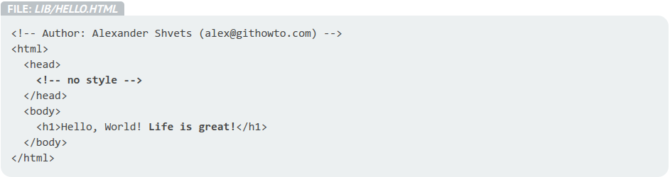
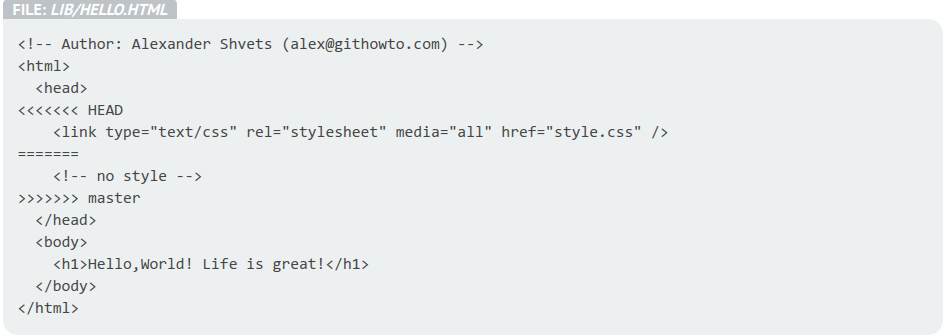

Taller de GIT
Eugenio & Coyote & Nacho
Created: 2016-10-17 Mon 23:58
Curso de Git - 2016 2017
Introdución
Control de versiones
Control de versiones local, único ordenador.

Control de versión centralizado.

Control de versión distribuido.

GIT
- Control de versiones
- Potencia el desarrollo de código distribuido.
- Y mola mucho
Instalar GIT
sudo pacman -S git sudo apt-get install git
Configurar GIT
git config --global user.name "Your Name" git config --global user.email "your_email@whatever.com" git init git remote add {nombreDelRemoto} {URLDelRepositorio} git clone
Git vs Otros entornos. ¿Por qué git?
- Porque sí. ¿Esperabas una respuesta mejor? Pues no.
SVN
- Pros:
- Sencillez.
- Contras:
- Solo existe un repo, imposible trabajar en local.
- No es git.
- Sencillez.
Mercurial
Bitbucket.
- Pros:
- Simple pero casi igual de potente que git.
- Newbie friendly.
- Contras:
- ¿Trabajar con ramas?. Iluso…
- Monolítico.
- Menos flexible.
Estructura de Git

Comandos de git. Desde lo más útiles a los salvavidas
Add & Commit
git add [files] git add . #Añadiría todos los cambios al index git add *.java #Añadiría únicamente aquellos archivos modificados que terminen en .java git add directorio/ #Añadiría el directorio y TODO SU CONTENIDO al index
git commit [--ammend] [-m "Mensaje del commit"] git commit -m "Hello World Completado" git commit -a -m <mensaje> # Equivalente a git add --all y git commit -m "Mensaje"
Push
git push [<remote>] [<branch>] git push #Equivalente a git push <remote>, solo si existe el remoto git push <remote> master # push de los cambios a la rama master del remoto
Pull
git pull git pull origin # git fetch && git merge FETCH_HEAD
Merge & Rebase
git merge [branch] # Mergea branch con la actual A---B---C topic / \ D---E---F---G---H master kbranch merge git merge [-m "Mensaje del commit"] [branch] # Mergra branch con la actual y lo incluye en un commit git merge [--abort] # Aborta el merge si entran en conflicto git rebase [branch] # Rebase. Por cada commit que hay en el branch, rebase genera un nuevo commit en el branch actual +--3--5 master | 1--2--+ | +--3--5--7--8 feature (4)(6) branch rebase
Conflictos
Lo que no ha unido la máquina, que lo haga el desarrollador.


Buenas praxis de git
- No te asustes.
- Las ramas son tus amigas.
- Commitea a menudo con cambios graduales y específicos.
- Ponle un mensaje útil a los mensajes.
- No todos los aportes son iguales: Las ramas son tus amigas.
Magit

Integración con otras herramientas/entornos
- ¡Git está para Güindous! https://git-scm.com/download/win Integra git en windows dándote, además, una terminal que simula una terminal linux
Recursos
- Git Book
- PDF, EPUB, MOBI, HTML
- try.github.io
- guides.github.com